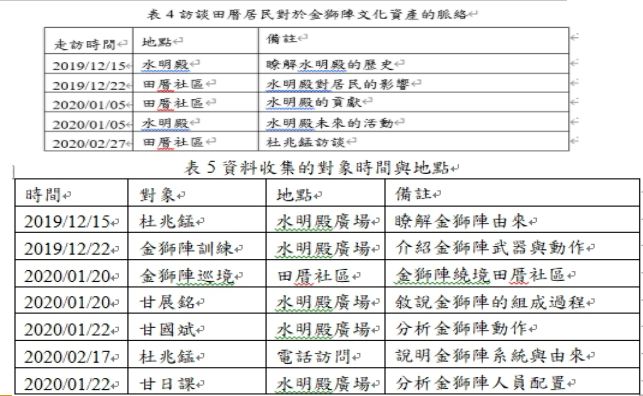
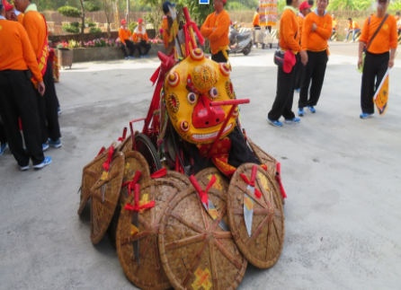
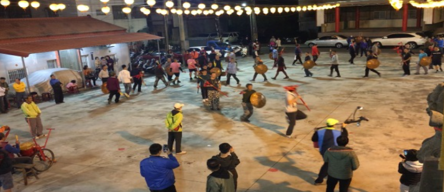

研究方法
一、田野調查
田野調查就是為研究者親自至所欲觀測事項之現場，執行直接或參與式之觀察與紀錄。其研究價值僅止於儘可能詳盡描述觀測事項之表現。因此，本文將藉由田野調查來進行田厝社區發展桑葚產業的觀察紀錄。
二、敘說探究法
將故事表達本身視為研究問題來加以剖析，從敘說者如何留住、呈現與解釋經驗的角度來研究與理解，也就是以故事型態作為分析的工具，告訴讀者在當時的時空脈絡下發生了什麼 (蔡敦浩、利尚仁和林韶怡，2008) 。
Oliver (1998) 以戲劇的角度說明一個理想的敘說，包括角色、情境與背景等三部份。不同的觀點，敘說探究應是整合領導者角色、情境、背景以及研究者經驗的詮釋與現場文本與受訪者互動的敘說，方能呈現有意義的理論。
三、資料蒐集
本組成員實際走訪田厝社區進行訪談與資料收集來拍製微電影，如表4所示，以及訪談當地了解金獅陣的熱心居民，並且了解田厝社區里民對於金獅陣文化資產脈絡的認知，如表5所示。
結論
本文針對甘兆欽(2016,2017,2018,2019)等過去的研究，做回顧整合研究發現田厝社區包括從過去日治時代的人文資產故事記錄，同時也發現復育桑葚產業對於活化老舊社區的重要性，呼籲台灣政府2018年對於地方創生的補助鼓勵。本文同時發揮教育部2019年推動的大學社會責任實踐年，持續透過所學的專業能力幫助田厝社區拍攝即將消失的傳統金獅陣的文化資產脈絡。


